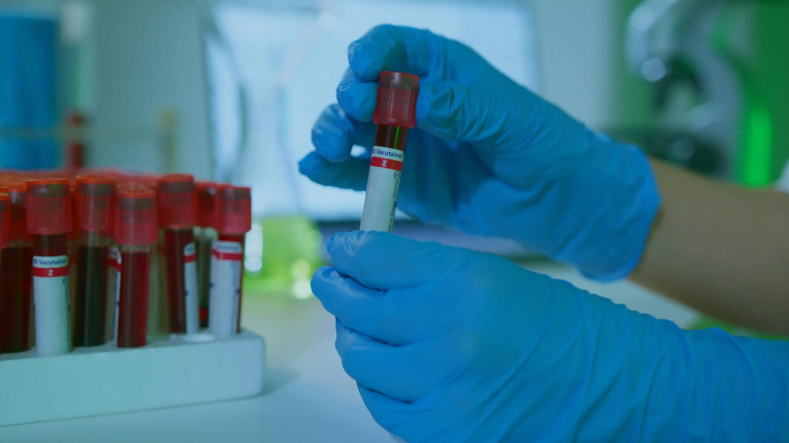
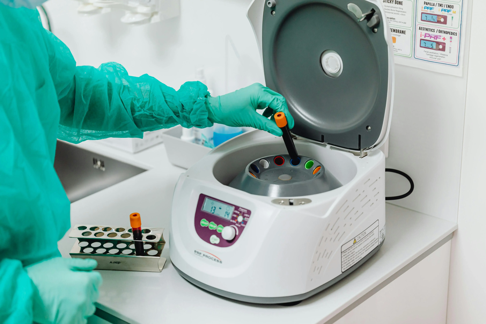

Blood Test at Home: Convenient Lab Services Across Ramanathapuram
Getting a blood test no longer requires clinic visits, waiting, or repeated trips for reports. With home blood collection Ramanathapuram, Gani Hospitals brings lab services to your doorstep. Our trained staff handle your lab test at home safely and efficiently. From routine checkups to full health panels, the Gani Hospitals lab ensures accurate results with quick turnaround. For those searching for a trusted diagnostic lab near me and reliable blood sample pickup Ramnad, we provide complete convenience and care.

Simply call Gani Hospitals lab to schedule your home blood collection Ramanathapuram appointment. Our trained phlebotomist arrives at your home at the chosen time, collects the sample hygienically, and delivers it to our diagnostic lab near me facility for same-day or next-day processing. Reports are shared digitally so your doctor receives results without delay. Our blood sample pickup Ramnad service is available across Ramanathapuram town and surrounding areas, making the lab test at home experience as simple and stress-free as possible.
Introduction — Why Home Blood Collection Is the Smarter Choice
Healthcare has evolved significantly, and one of the most patient-friendly advances is the availability of professional lab test at home services. For many people in Ramanathapuram, visiting a hospital or clinic for a blood draw creates real barriers: distance, transportation challenges, fasting requirements that make travel uncomfortable, mobility limitations in elderly patients, and the anxiety that some individuals feel in clinical environments.
Home blood collection Ramanathapuram at Gani Hospitals removes every one of those barriers. You remain in the comfort of your own home. A certified, uniformed phlebotomist arrives at your scheduled time, performs the blood draw professionally using sterile single-use equipment, and the samples are transported directly to the Gani Hospitals lab for analysis. For patients who have been searching for a trustworthy diagnostic lab near me that also offers doorstep collection, our blood sample pickup Ramnad service is the most convenient option available in the district today.
Who Benefits Most from a Lab Test at Home
While any patient can enjoy the convenience of lab test at home services, certain groups benefit most significantly from home blood collection Ramanathapuram at Gani Hospitals:
Elderly and Differently-Abled Patients
Senior citizens with limited mobility, post-surgical patients, and individuals with physical disabilities often find travelling to a diagnostic lab near me extremely difficult. Our blood sample pickup Ramnad service ensures they receive the same quality diagnostics as any walk-in patient, without the physical or logistical challenge of leaving home. The Gani Hospitals lab team is trained to work with sensitivity and patience with elderly and differently-abled patients.
Pregnant and Postpartum Mothers
Pregnancy involves frequent blood tests across all trimesters and in the postpartum period. A lab test at home eliminates the need for a pregnant woman to travel while fasting, wait in a clinic queue, and return again for reports. Our home blood collection Ramanathapuram service is especially popular among expectant mothers who are also using our maternity services at Gani Hospitals.
Patients with Chronic Conditions
Diabetics, hypertensive patients, thyroid disorder patients, and kidney disease patients require regular monitoring — sometimes monthly or more frequently. Repeated visits to a diagnostic lab near me become exhausting over time. Our blood sample pickup Ramnad service allows these patients to maintain consistent testing schedules without interrupting their daily routine or risking their health during travel.
Busy Working Professionals
Work schedules, school runs, and household responsibilities make it difficult for many adults to take time off for a clinic visit. A scheduled early-morning lab test at home from the Gani Hospitals lab fits seamlessly into the day without requiring leave from work or any special arrangement. The home blood collection Ramanathapuram appointment takes under fifteen minutes from doorbell to departure.
Children Who Experience Clinic Anxiety
Many children associate hospitals with fear and discomfort. A familiar home environment significantly reduces anxiety during a blood draw. Our home blood collection Ramanathapuram team is experienced in working gently and calmly with young patients, making the lab test at home experience far less stressful than a clinic visit.
Tests Available Through Our Home Blood Collection Service
The Gani Hospitals lab processes a comprehensive range of blood and urine tests through our home blood collection Ramanathapuram service. Whether your doctor has prescribed a single test or a full diagnostic panel, our blood sample pickup Ramnad team collects everything in one visit. Tests available include:
Routine Health Screening
- Complete Blood Count (CBC) — haemoglobin, WBC, platelets
- Erythrocyte Sedimentation Rate (ESR)
- Peripheral Blood Smear for malaria and anaemia evaluation
- Blood grouping and Rh typing
- Basic Metabolic Panel — sodium, potassium, chloride, bicarbonate
Diabetes Monitoring
- Fasting Blood Sugar (FBS) and Post-Prandial Blood Sugar (PPBS)
- HbA1c — three-month average blood glucose control
- Random Blood Sugar (RBS)
- Insulin levels and HOMA-IR for insulin resistance assessment
Thyroid and Hormone Tests
- TSH, Free T3, Free T4 thyroid panel
- Prolactin, LH, FSH, and oestrogen for hormonal evaluation
- Testosterone and DHEA-S for male hormonal health
- AMH for ovarian reserve assessment
Liver and Kidney Function
- Liver Function Tests (LFT) — SGOT, SGPT, bilirubin, albumin
- Kidney Function Tests (KFT) — creatinine, urea, uric acid
- Electrolytes panel
- 24-hour urine protein and microalbuminuria for kidney monitoring
Lipid Profile and Cardiac Markers
- Complete Lipid Profile — total cholesterol, LDL, HDL, triglycerides
- hsCRP for cardiovascular inflammation risk
- Homocysteine levels for heart disease risk
Vitamin and Nutritional Deficiency Tests
- Vitamin D (25-OH) — extremely common deficiency in Tamil Nadu
- Vitamin B12 and Folate
- Serum Iron, TIBC, and Ferritin for anaemia investigation
- Calcium and Phosphorus panel
Infection and Immunity Tests
- Dengue NS1 antigen and antibody testing
- Typhoid Widal test and Typhidot rapid test
- HIV, HBsAg, HCV screening
- Weil-Felix for scrub typhus
- CRP for bacterial infection assessment
Pregnancy-Related Tests
- Beta-HCG for pregnancy confirmation and monitoring
- TORCH panel for infection screening in pregnancy
- Gestational Diabetes Glucose Challenge and GTT
- Double and Triple Marker screening tests
- Blood group and indirect Coombs test for Rh-negative mothers
If your doctor has prescribed a test not listed above, contact our diagnostic lab near me team at Gani Hospitals lab directly. Our laboratory handles a wide range of specialised assays and can advise on availability for blood sample pickup Ramnad collection.

How Our Home Blood Collection Process Works
Booking a lab test at home from Gani Hospitals lab is straightforward and takes only a few minutes. Here is exactly how our home blood collection Ramanathapuram process works from start to finish:
- Step 1 — Book your appointment: Call our lab helpline or walk into Gani Hospitals lab to register your tests and provide your address. Our team confirms a time slot that works for you, typically early morning to accommodate fasting requirements for most lab test at home panels.
- Step 2 — Phlebotomist arrives: Our certified, uniformed, and ID-verified phlebotomist reaches your home at the agreed time as part of our reliable blood sample pickup Ramnad service. They carry sterile single-use needles, vacutainers, labelled collection tubes, gloves, and a sealed transport box — everything required for a safe, hygienic draw.
- Step 3 — Sample collection: The phlebotomist follows strict sterile technique during the blood draw. All equipment is opened in front of you and disposed of safely after use. Collection typically takes under ten minutes regardless of how many tests are prescribed. This is the hallmark of professional home blood collection Ramanathapuram service.
- Step 4 — Sample transport: Samples are sealed, labelled, and transported immediately to the Gani Hospitals lab under temperature-controlled conditions to preserve integrity. Our diagnostic lab near me facility begins processing within hours of collection.
- Step 5 — Report delivery: Results are shared digitally via WhatsApp or email and are also available for collection at the Gani Hospitals lab. Most routine tests from our blood sample pickup Ramnad service are reported within 24 hours and many within the same day.
- Step 6 — Doctor consultation: If your results require medical review, our integrated team at Gani Hospitals is available to provide an immediate consultation — making our lab test at home service part of a truly complete healthcare experience, not just a sample collection exercise.
Why Gani Hospitals Lab is the Most Trusted Diagnostic Lab Near Me
Certified and Experienced Phlebotomists
Every professional conducting a home blood collection Ramanathapuram visit on behalf of Gani Hospitals lab is trained, certified, and regularly assessed for technique and sterile practice. Patients can verify the identity and credentials of every staff member before the blood draw begins. Safety and professionalism are non-negotiable standards in our blood sample pickup Ramnad service.
Accurate, NABL-Standard Laboratory Processing
Sample accuracy depends entirely on the quality of the laboratory processing it. Gani Hospitals lab uses calibrated, maintained equipment with rigorous quality control protocols, ensuring that every result you receive reflects your true health status. When you choose our diagnostic lab near me, you are choosing a lab that takes accuracy as seriously as your doctor does.
Wide Coverage Across Ramanathapuram District
Our home blood collection Ramanathapuram service covers not just the town centre but also surrounding areas including Rameswaram, Paramakudi, Thiruvadanai, Mandapam, and Keelakarai. Wherever you are in the district, our blood sample pickup Ramnad team can reach you. No other diagnostic lab near me option provides this level of geographical coverage combined with the quality of Gani Hospitals lab.
Fast Turnaround and Digital Reports
Results from our lab test at home service are processed rapidly. Routine haematology and biochemistry panels are typically reported within 6 to 12 hours. Specialised tests may take 24 to 48 hours. All reports from Gani Hospitals lab are shared digitally with clear reference ranges so patients and doctors can interpret results without confusion or delay.
Affordable Pricing with No Hidden Charges
Our home blood collection Ramanathapuram service is priced transparently. The home visit fee is clearly communicated at the time of booking with no surprise charges added later. Affordable, honest pricing is part of the Gani Hospitals lab commitment to making quality diagnostics accessible to every family in the Ramnad district, regardless of background or economic status.
Integrated with Full Hospital Services
Unlike a standalone diagnostic lab near me facility, Gani Hospitals integrates laboratory findings directly with specialist consultations, inpatient care, and pharmacy services. If your lab test at home result requires urgent review, our doctors are available immediately. This is the advantage of choosing a hospital-backed blood sample pickup Ramnad service over an independent collection centre.
Common Health Conditions That Require Regular Blood Testing
Many of the most common chronic conditions in Ramanathapuram require ongoing laboratory monitoring. Our home blood collection Ramanathapuram service makes consistent testing realistic and sustainable for these patients:
- Diabetes mellitus: HbA1c and fasting glucose tests every three months. Our lab test at home service means diabetic patients never miss a monitoring cycle due to travel difficulty.
- Hypertension and heart disease: Lipid profiles, kidney function, and electrolyte panels are essential for patients on antihypertensive medication. Blood sample pickup Ramnad brings testing to the patient's door.
- Thyroid disorders: TSH monitoring every six months for patients on thyroid replacement or suppression therapy. Our Gani Hospitals lab processes thyroid panels with same-day turnaround.
- Chronic kidney disease: KFT, urine albumin, and electrolyte monitoring requires frequent testing. Our diagnostic lab near me service spares these patients the fatigue of repeated clinic visits.
- Anaemia and nutritional deficiency: CBC, ferritin, Vitamin B12, and Vitamin D are regularly needed for patients with deficiency disorders. A single home blood collection Ramanathapuram visit covers all these tests.
- Liver disease: LFT monitoring for patients on hepatotoxic medications or managing hepatitis. Gani Hospitals lab provides accurate, rapid liver function panels through our home service.
If you or a family member manages any of these conditions, our blood sample pickup Ramnad service is the most convenient way to stay on top of your health without disruption to daily life. Call our diagnostic lab near me team to set up a recurring testing schedule.

Preparing for Your Home Blood Collection Visit
To ensure the best possible results from your lab test at home appointment, follow these simple preparation guidelines before your home blood collection Ramanathapuram visit from Gani Hospitals lab:
- Fasting tests: For fasting blood sugar, lipid profile, or liver function tests, fast for 8 to 12 hours before the appointment. You may drink plain water throughout the fasting period.
- Hydration: Drink adequate water before the visit. Good hydration makes veins more prominent, making the blood draw easier and more comfortable.
- Medication: Unless your doctor has specifically asked you to withhold medication before the blood sample pickup Ramnad visit, continue your regular medicines as prescribed.
- Prescription or test requisition: Keep your doctor's prescription or the test list ready to hand over to our Gani Hospitals lab phlebotomist on arrival.
- Comfortable clothing: Wear a loose-sleeved garment that allows easy access to the forearm for a smooth and quick blood draw during your lab test at home appointment.
- Inform us of special needs: If you require assistance due to mobility limitations, a fear of needles, or a child is being tested, mention this when booking so our home blood collection Ramanathapuram team can prepare accordingly.
Areas Covered by Our Blood Sample Pickup Service in Ramnad
Our blood sample pickup Ramnad service from Gani Hospitals lab is currently available across the following locations in and around Ramanathapuram district. If you are searching for a diagnostic lab near me with home collection in any of these areas, our team can reach you:
- Ramanathapuram town — all areas and residential zones
- Rameswaram and Pamban Island
- Paramakudi and surrounding villages
- Thiruvadanai and Uchipuli
- Mandapam and Keelakarai
- Mudukulathur and Kamuthi
- Rajasingamangalam and Ervadi
Coverage is expanding regularly. If your location is not listed, call our Gani Hospitals lab team directly to check availability. Our goal is to make home blood collection Ramanathapuram and lab test at home services accessible to every family in the entire Ramnad district, not just those close to our main facility.
Trusted Resources for Laboratory and Diagnostic Health Information
For evidence-based guidance on blood tests, diagnostic values, and understanding your lab results, these globally trusted health organisations provide excellent resources:
- World Health Organization (WHO) — Laboratory and Diagnostics
- CDC — Laboratory Testing and Diagnostics
- MedlinePlus — Understanding Laboratory Tests
- UNICEF — Preventive Health and Screening Guidelines
These resources complement the expert guidance provided by our specialists at Gani Hospitals lab and help patients understand their lab test at home results in context before their doctor consultation.
Conclusion — Bring the Lab to Your Door with Gani Hospitals
Your health should never be compromised because a blood test feels inconvenient. With home blood collection Ramanathapuram from Gani Hospitals lab, the entire diagnostic process — booking, sample collection, analysis, and report delivery — is handled professionally, affordably, and entirely around your schedule.
Whether you are managing a chronic condition, monitoring a pregnancy, supporting an elderly family member, or simply completing a routine annual health check, our lab test at home service brings the quality of a trusted diagnostic lab near me directly to your front door. Our blood sample pickup Ramnad team operates across the district with the same accuracy, hygiene, and care that families have come to expect from Gani Hospitals lab over many years.
Stop searching for a diagnostic lab near me that you have to travel to — let Gani Hospitals lab come to you. Book your home blood collection Ramanathapuram appointment today and experience diagnostics the way they should be: convenient, accurate, and completely trustworthy.
Also explore: Best Pediatricians at Gani Hospitals | Pregnancy Scan Services | Diabetes Treatment at Gani Hospitals | Book an Appointment
Call us today — because your health check should come to you, not the other way around.
Frequently Asked Questions
How do I book a home blood collection in Ramanathapuram?
Call Gani Hospitals lab directly to schedule your home blood collection Ramanathapuram appointment. Provide your address, the tests required, and your preferred time slot. Our blood sample pickup Ramnad team will confirm your booking and arrive on time with all necessary equipment.
Is the lab test at home service as accurate as visiting a lab in person?
Absolutely. The accuracy of a lab test at home depends entirely on proper sample collection and transport — both of which our certified phlebotomists and cold-chain transport process guarantee. The same Gani Hospitals lab equipment and protocols process every sample regardless of whether it was collected at home or in the clinic.
Which areas in Ramnad does the blood sample pickup service cover?
Our blood sample pickup Ramnad service currently covers Ramanathapuram town, Rameswaram, Paramakudi, Thiruvadanai, Mandapam, Keelakarai, Mudukulathur, and Kamuthi. Call our diagnostic lab near me helpline to confirm availability in your specific location.
How long does it take to receive my home blood test report?
Most routine tests processed at Gani Hospitals lab following a home blood collection Ramanathapuram visit are reported within 6 to 24 hours. Reports are shared digitally via WhatsApp or email so your doctor can review results without delay.
Is there an extra charge for the home collection visit?
A nominal, transparent home visit fee applies for our lab test at home service. This is communicated clearly at the time of booking with no hidden charges. The Gani Hospitals lab believes quality diagnostic lab near me services should be affordable for every family in Ramanathapuram.
Can I book multiple tests in a single home blood collection visit?
Yes. Our blood sample pickup Ramnad phlebotomist can collect samples for multiple tests in a single visit. Whether you need a CBC, thyroid panel, lipid profile, and HbA1c together, our home blood collection Ramanathapuram team handles everything efficiently in one appointment at the Gani Hospitals lab standard of care.